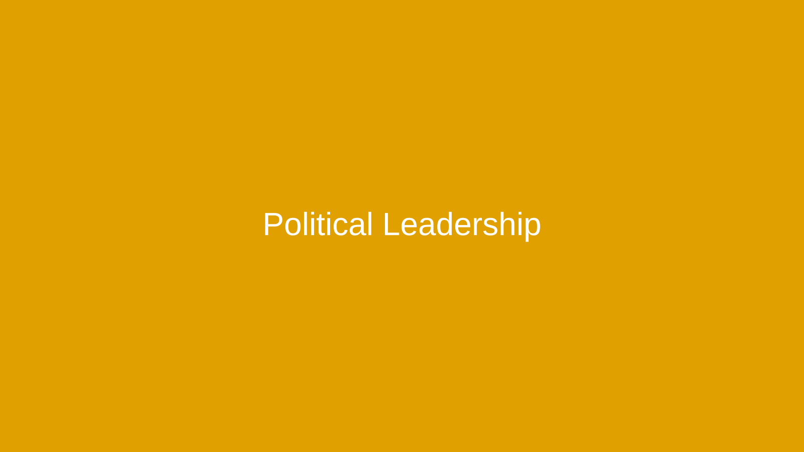
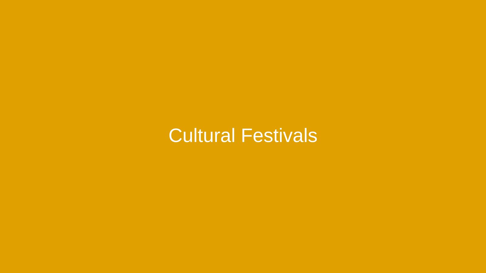
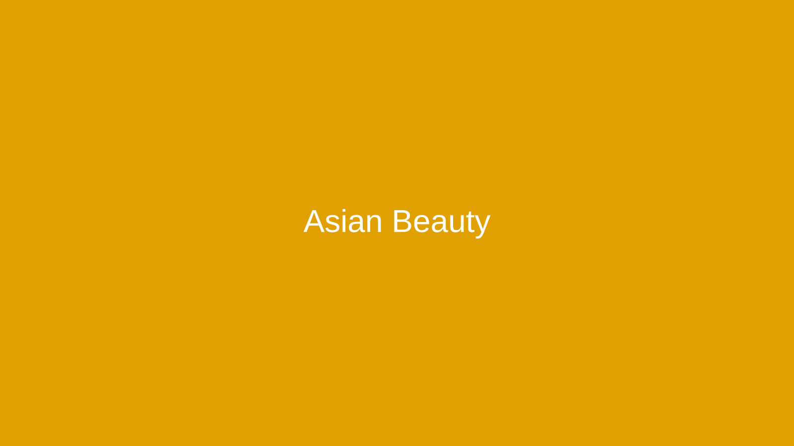
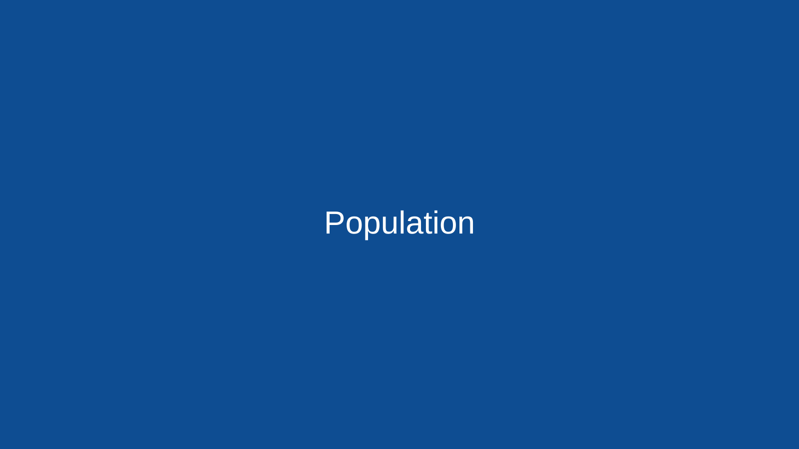
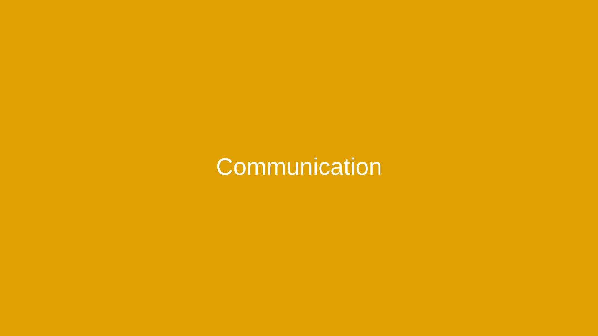
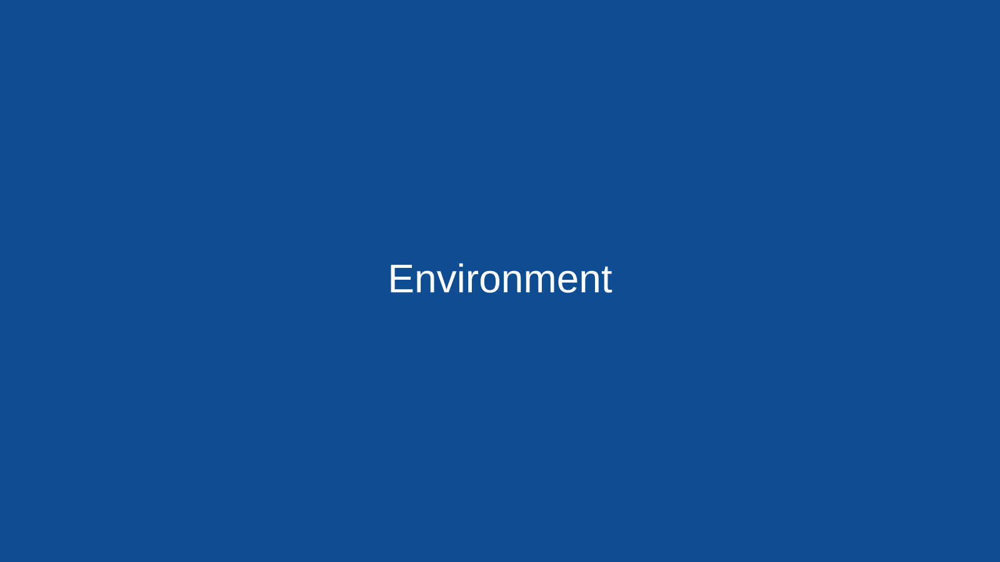

Mongolia — The Heart of Asia
Endless blue skies, vast steppes, and a living nomadic heritage. Explore culture, language, sports, festivals, and modern life in this Asian nation.
Start exploring How to edit
Endless blue skies, vast steppes, and a living nomadic heritage. Explore culture, language, sports, festivals, and modern life in this Asian nation.
Start exploring How to edit
EN: Mongolia lies between Russia and China, known for the open steppe, the Gobi Desert, and the legacy of the Mongol Empire. Today it blends nomadic traditions with rapid urban growth in Ulaanbaatar.
TH: มองโกเลียตั้งอยู่ระหว่างรัสเซียและจีน โดดเด่นด้วยทุ่งหญ้าสเตปป์ ทะเลทรายโกบี และประวัติศาสตร์จักรวรรดิ ปัจจุบันผสานวิถีเร่ร่อนกับความทันสมัยในอูลานบาตอร์
Tip: เปลี่ยน VIDEO_ID ในไฟล์ index.html ให้เป็นลิงก์ YouTube ของคุณ
EN: Mongolian wellness draws from hearty diets of meat and dairy, herbal remedies, and hot springs. City lifestyles increasingly include fitness and balanced diets.
TH: สุขภาพแบบมองโกเลียเน้นอาหารเนื้อ-นม สมุนไพร น้ำพุร้อน และในเมืองนิยมฟิตเนสและโภชนาการสมดุลมากขึ้น

Tip: เปลี่ยน VIDEO_ID ในไฟล์ index.html ให้เป็นลิงก์ YouTube ของคุณ
EN: From historical Khans to modern presidents and prime ministers, Mongolia’s system emphasizes democratic institutions and rule of law.
TH: จากข่านในอดีตสู่ผู้นำสมัยใหม่ ระบบกึ่งประธานาธิบดีให้ความสำคัญกับสถาบันประชาธิปไตยและนิติรัฐ

Tip: เปลี่ยน VIDEO_ID ในไฟล์ index.html ให้เป็นลิงก์ YouTube ของคุณ
EN: Mongolia’s image is shaped by historic icons and modern figures in arts, sports, and business.
TH: ภาพลักษณ์ประเทศหลอมรวมจากบุคคลสำคัญทั้งในอดีตและปัจจุบัน ทั้งศิลปะ กีฬา และธุรกิจ
Tip: เปลี่ยน VIDEO_ID ในไฟล์ index.html ให้เป็นลิงก์ YouTube ของคุณ
EN: Naadam showcases the Three Manly Games, while Tsagaan Sar marks Lunar New Year with family gatherings and traditional foods.
TH: นาดามเฉลิมฉลองสามกีฬา ส่วนซากานซาร์คือปีใหม่จันทรคติที่รวมญาติและอาหารดั้งเดิม

Tip: เปลี่ยน VIDEO_ID ในไฟล์ index.html ให้เป็นลิงก์ YouTube ของคุณ
EN: Mongolian throat singing and horse-head fiddle meet indie pop and a growing film scene.
TH: การขับร้องคอและมอรินคูร์ผสานกับดนตรีร่วมสมัยและวงการภาพยนตร์ที่เติบโต
Tip: เปลี่ยน VIDEO_ID ในไฟล์ index.html ให้เป็นลิงก์ YouTube ของคุณ
EN: Khalkha Mongolian uses the Cyrillic script nationwide; the Classical script is preserved and taught; Russian and English appear in education and business.
TH: ภาษามองโกเลียสำเนียงคัลคาใช้อักษรซีริลลิก มีการอนุรักษ์อักษรโบราณ และพบภาษารัสเซีย/อังกฤษในภาคการศึกษาและธุรกิจ

Tip: เปลี่ยน VIDEO_ID ในไฟล์ index.html ให้เป็นลิงก์ YouTube ของคุณ
EN: Traditional sports anchor national identity, and eagle hunting in the west showcases unique skills.
TH: กีฬาดั้งเดิมหล่อหลอมอัตลักษณ์ชาติ การล่าด้วยอินทรีในตะวันตกสะท้อนทักษะเฉพาะถิ่น
Tip: เปลี่ยน VIDEO_ID ในไฟล์ index.html ให้เป็นลิงก์ YouTube ของคุณ
EN: Natural beauty values healthy skin, sun protection, and minimal makeup; traditional garments inspire modern fashion.
TH: ค่านิยมความงามเน้นผิวสุขภาพดี กันแดด และเมคอัพน้อย โดยเสื้อผ้าดั้งเดิมสร้างแรงบันดาลใจให้แฟชั่นสมัยใหม่

Tip: เปลี่ยน VIDEO_ID ในไฟล์ index.html ให้เป็นลิงก์ YouTube ของคุณ
EN: Mongolia balances rapid urbanization in Ulaanbaatar with rural nomadic life across vast lands.
TH: ประเทศมีความหนาแน่นประชากรต่ำ เมืองหลวงเติบโตควบคู่ชนบทแบบเร่ร่อน

Tip: เปลี่ยน VIDEO_ID ในไฟล์ index.html ให้เป็นลิงก์ YouTube ของคุณ
EN: Platforms connect vast distances; TV/radio remain important beyond cities. Mobile data powers commerce and education.
TH: แพลตฟอร์มดิจิทัลเชื่อมพื้นที่ห่างไกล ทีวี/วิทยุยังสำคัญนอกเมือง อินเทอร์เน็ตมือถือขับเคลื่อนการค้าและการศึกษา

Tip: เปลี่ยน VIDEO_ID ในไฟล์ index.html ให้เป็นลิงก์ YouTube ของคุณ
EN: Key issues include winter smog in Ulaanbaatar, desertification, and climate variability; policies promote cleaner heating and reforestation.
TH: ประเด็นสำคัญคือมลพิษฤดูหนาว การกลายเป็นทะเลทราย และความผันผวนสภาพอากาศ โดยมีมาตรการพลังงานสะอาดและการปลูกป่า

Tip: เปลี่ยน VIDEO_ID ในไฟล์ index.html ให้เป็นลิงก์ YouTube ของคุณ
Images: Placeholder SVGs included in /images. Replace with your royalty‑free images.
Videos: Edit each VIDEO_ID in the YouTube iframes to your links.
Typography & Colors: Defined in assets/style.css. Adjust to match your style.
Navigation: Top menu links to section IDs. Add or reorder by editing the nav in index.html.